1과목: 발달심리
1. 발테스와 발테스(P. Baltes & M. Baltes)의 '보상을 수반한 선택적 최적화' 이론에 관한설명으로 옳은 것을 모두 고른 것은?
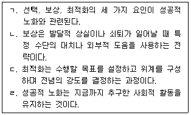
2. 다음의 내용을 모두 포함하는 개념은?
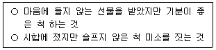
3. 프로이드(S. Freud)의 심리성적 발달 단계의 설명이 옳은 것을 모두 고른 것은?
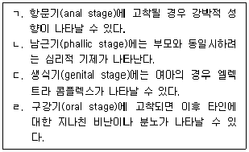
4. 다음의 사례에 해당하는 인지발달의 개념으로 옳은 것은?
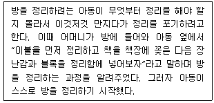
5. 언어 발달에 관한 설명으로 옳지 않은 것은?
6. 피아제(J. Piaget) 도덕발달 단계 중 내재적 정의(moral justice)를 믿는 단계의 특성으로 옳은 것은?
7. 태내 발달의 순서가 바르게 나열된 것은?
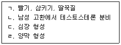
8. 표현형은 여성이나 사춘기에 2차 성징이 정상적으로 나타나지 않는 유전적 결함의 질환으로 옳은 것은?
9. 자의식적 또는 사회적 정서에 해당되지 않는 것은?
10. 바움린드(D. Baumrind)가 제안한 부모의 양육방식에 관한 설명으로 옳지 않은 것은?
11. 레빈슨(D. Levinson)이 제안한 발달 이론에 관한 설명으로 옳은 것은?
12. 다음에서 설명하는 것은?
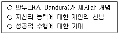
13. DSM-5의 자폐스펙트럼장애에 관한 설명으로 옳은 것을 모두 고른 것은?
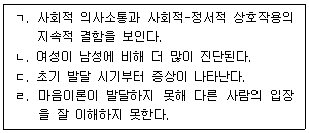
14. DSM-5의 신경발달장애에 해당되지 않는 것은?
15. DSM-5의 반응성 애착장애 진단기준에 관한 설명으로 옳지 않은 것은?
16. 발달연구방법에 관한 설명으로 옳지 않은 것은?
17. 인간발달 연구의 윤리 준수사항에 관한 설명으로 옳지 않은 것은?
18. 발달에 관한 설명으로 옳지 않은 것은?
19. 신생아의 반사 행동에 관한 설명으로 옳지 않은 것은?
20. 영아기 대근육 운동발달을 순서대로 옳게 나열한 것은?
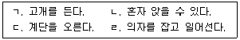
21. 피아제(J. Piaget)의 인지발달 단계에서 대상영속성이 획득되는 시기는?
22. 피아제(J. Piaget) 이론에서 전조작기의 특성으로 옳은 것을 모두 고른 것은?
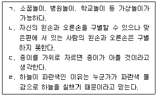
23. 기억 발달에 관한 설명으로 옳은 것은?
24. 청소년기 인지발달의 특성에 관한 설명으로 옳지 않은 것은?
25. 다음의 지능이론을 주장한 학자는?
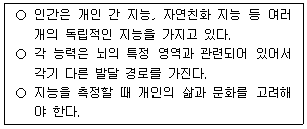
2과목: 집단상담의 기초
26. 다음 내용을 모두 만족하는 집단의 유형은?
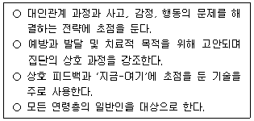
27. 집단상담 평가에 관한 설명으로 옳지 않은 것은?
28. 합리정서행동상담(REBT)에서 집단상담자의 역할에 관한 설명으로 옳지 않은 것은?
29. 집단상담의 사전 계획에 관한 설명으로 옳지 않은 것은?
30. 정신분석 집단상담에 관한 설명으로 옳지 않은 것은?
31. 다음 사례에 근거한 집단상담의 이론적 접근에 해당하는 것은?
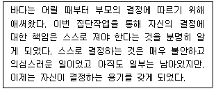
32. 심리극 집단상담에 관한 설명으로 옳은 것을 모두 고른 것은?
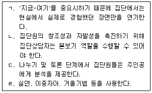
33. 아들러(A. Adler) 집단상담에 관한 설명으로 옳지 않은 것은?
34. 다음에 해당하는 우볼딩(R. Wubbolding)의 현실치료 집단상담 단계에 관한 설명으로 옳은 것은?
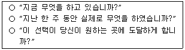
35. 인간중심 집단상담에 관한 설명으로 옳지 않은 것은?
36. 다음에 해당하는 집단상담 이론은?
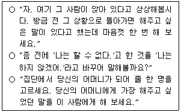
37. 집단상담의 윤리에 관한 설명으로 옳은 것을 모두 고른 것은?
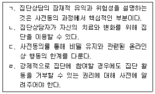
38. 다음 축어록에서 집단상담자가 사용한 집단상담 기법을 순서대로 옳게 나열한 것은?
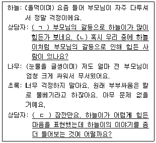
39. 공동리더십의 한계를 극복하기 위한 방안으로 옳은 것을 모두 고른 것은?
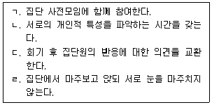
40. 학교 장면에서 이루어지는 청소년 집단상담에 관한 설명으로 옳지 않은 것은?
41. 청소년 집단상담 종결단계의 효과적인 개입전략은?
42. 집단원의 문제행동에 대한 집단상담자의 개입으로 옳지 않은 것은?
43. 집단상담에서 사전 개별면담의 기능으로 옳지 않은 것은?
44. 집단에 대한 신뢰가 낮을 때 나타나는 집단원들의 특징을 모두 고른 것은?
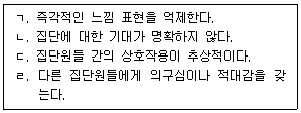
45. 코리(G. Corey)의 집단발달단계 중 과도기 단계에서 집단상담자의 반응으로 옳지 않은 것은?
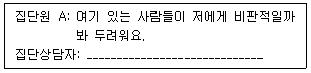
46. 다음에서 집단원이 말하는 치료적 요인을 순서대로 바르게 연결한 것은?
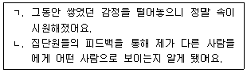
47. 빈의자 기법을 활용할 수 있는 상황을 모두 고른 것은?
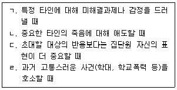
48. 구조화 집단상담 초기단계에서 집단상담자의 역할에 관한 설명으로 옳지 않은 것은?
49. 집단상담의 기법과 예시가 바르게 연결된 것을 모두 고른 것은?
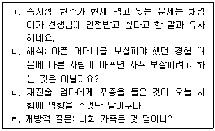
50. 청소년 집단상담자의 행동으로 옳지 않은 것은?
3과목: 심리측정 및 평가
51. 다음 지시문에 부합하는 문항반응양식은?
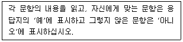
52. 심리평가에 관한 설명으로 옳은 것은?
53. Z 점수에 관한 설명으로 옳지 않은 것은?
54. 준거참조검사에 관한 설명으로 옳은 것을 모두 고른 것은?
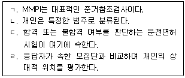
55. 한국 중학생의 대인관계 부적응과 불안 간의 상관계수가 0.5로 통계적으로 유의하게 나타났다. 이 값은 불안의 전체 분산 가운데 몇 %가 대인관계 부적응의 분산에 의해 설명됨을 의미하는가?
56. 체온과 체중 측정치는 각각 어떤 종류의 척도에 해당하는가?
57. 통계에 관한 설명으로 옳지 않은 것은?
58. 검사-재검사 신뢰도에 관한 설명으로 옳지 않은 것은?
59. 다음에서 설명하는 타당도는?
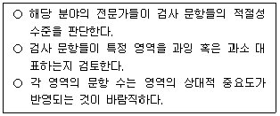
60. 심리학자 A는 새로운 우울증 검사 B를 개발하였다. 이 검사가 기존의 우울증 검사 C와 이론적으로 관련성이 높은지 알아보기 위해 B와 C 간의 상관계수를 산출하였다. 이는 무엇을 분석하기 위한 것인가?
61. 능력검사에 관한 설명으로 옳은 것을 모두 고른 것은?
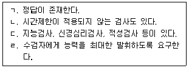
62. 심리검사 시행 시 고려사항으로 옳은 것을 모두 고른 것은?
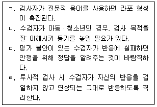
63. K-WAIS-Ⅳ의 소검사에 관한 설명으로 옳은 것은?
64. K-WISC-Ⅴ의 기본지표와 지표에 포함된 소검사의 연결이 옳지 않은 것은?
65. 중학교 2학년 A는 K-WISC-Ⅴ에서 전체 IQ가 85로 나타났다. 이 결과에 관한 설명으로 옳은 것을 모두 고른 것은?
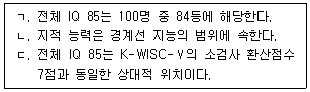
66. 스피어만(C. Spearman)의 2요인 이론과 CHC(Cattell-Horn-Carroll) 이론의 공통점으로 옳은 것은?
67. MMPI-2 임상척도 4의 소척도가 아닌 것은?
68. 다음에 해당하는 MMPI-2의 코드 유형은?
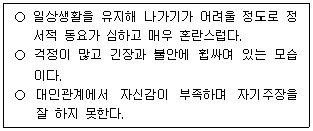
69. 정보를 인식하는 방식에서의 경향성을 나타내는 MBTI의 하위척도는?
70. TCI의 기질척도가 아닌 것은?
71. 다음의 성격특성에 해당하는 홀랜드(J. Holland)의 직업적 성격유형은?
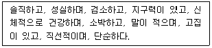
72. HTP 검사의 실시방법에 관한 설명으로 옳지 않은 것은?
73. 삭스(J. Sacks)가 개발한 문장완성검사의 네 가지 대표영역이 아닌 것은?
74. 로샤(Rorschach) 검사의 엑스너(Exner) 종합체계에서 강박성향지표(OBS)에 해당하는 것은?
75. 로샤(Rorschach) 검사의 엑스너(Exner) 종합체계에서 발달질 채점 기호로 옳지 않은 것은?
4과목: 상담이론
76. 상담자의 윤리적 행동으로 옳은 것은?
77. 상담에 관한 설명으로 옳지 않은 것은?
78. 다음 ( )에 해당하는 방어기제로 옳은 것은?
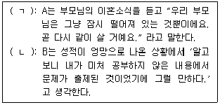
79. 다음 설명에 해당하는 정신분석의 개념은?
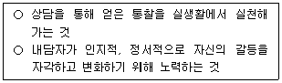
80. 대상관계이론에 관한 설명으로 옳지 않은 것은?
81. 상담이론과 기법의 연결이 옳지 않은 것은?
82. 아들러(A. Adler)의 개인심리학에 관한 설명으로 옳은 것을 모두 고른 것은?
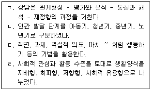
83. 다음 설명에 해당하는 상담이론은?
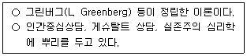
84. 조작적 조건화에 기초한 행동주의 상담기법으로 옳지 않은 것은?
85. 다음 사례의 상담자가 사례개념화에 적용한 상담이론은?
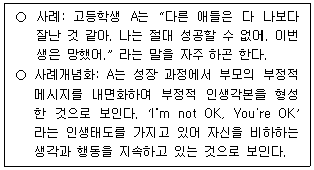
86. 게슈탈트 상담자의 반응으로 옳은 것을 모두 고른 것은?
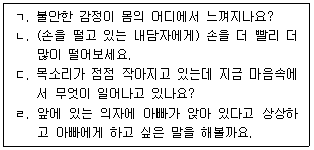
87. 합리정서행동상담(REBT)에서 비합리적 사고의 기준으로 옳지 않은 것은?
88. 다음 사례에서 상담자가 사용한 해결중심 상담의 질문으로 옳은 것은?
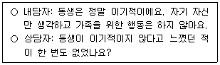
89. 현실치료의 계획단계에서 고려해야할 사항으로 옳은 것을 모두 고른 것은?
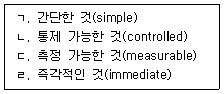
90. 현실치료의 기본욕구와 설명이 옳지 않은 것은?
91. 다음 설명에 해당하는 교류분석의 개념은?
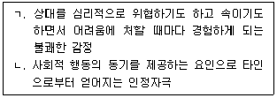
92. 여성주의 상담의 원리로 옳은 것을 모두 고른 것은?
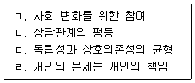
93. 다문화상담에 관한 설명으로 옳은 것을 모두 고른 것은?
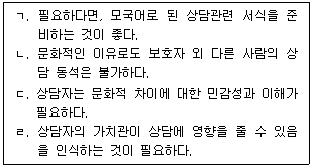
94. 통합적 접근에 관한 설명으로 옳은 것을 모두 고른 것은?
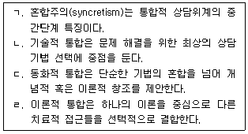
95. 벡(A. Beck)의 인지왜곡(cognitive distortion)에 관한 개념과 그 예로 옳은 것을 모두 고른 것은?
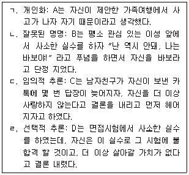
96. 상담과정에 관한 설명으로 옳지 않은 것은?
97. 상담에서 종결과 관련된 내용으로 옳지 않은 것은?
98. 다음 사례에서 상담자가 사용한 상담기법은?
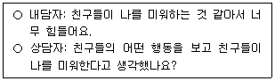
99. 상담기법과 예시의 연결이 옳은 것을 모두 고른 것은?
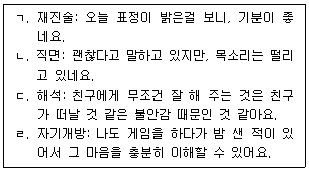
100. 청소년상담사 윤리강령 상 '전문가로서의 책임'에 해당하지 않는 것은?